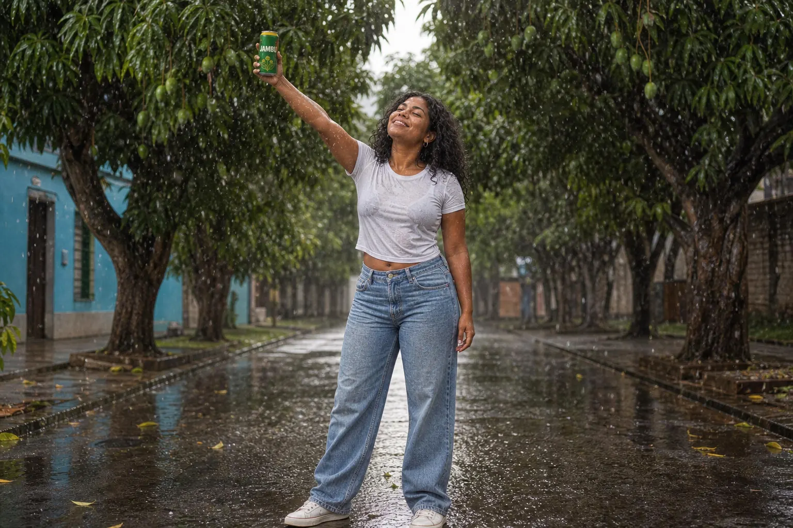
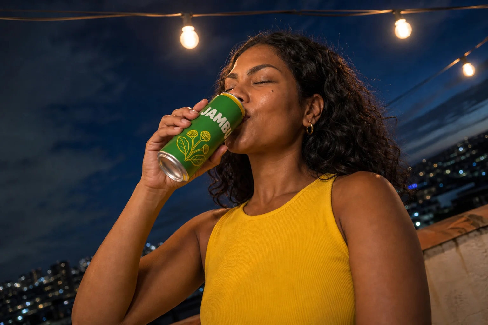
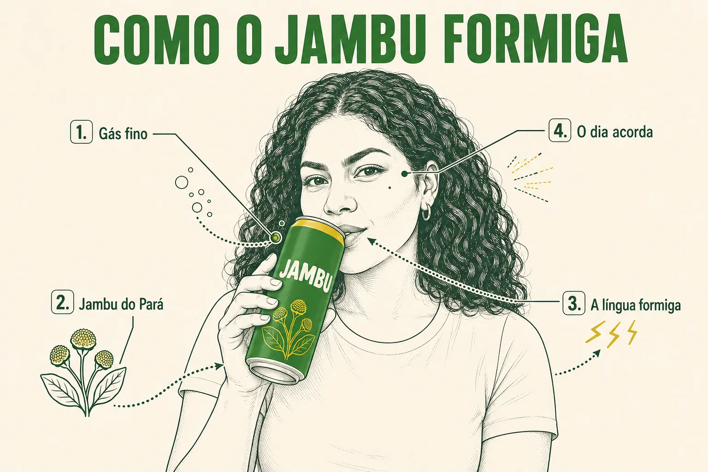

Este é o módulo em que tudo vira entrega. Até aqui você aprendeu as peças separadas: a lata (1-1), a Maíra (1-2), a marca com texto e HEX (2-1), a exploração e o storyboard (3-1), as referências múltiplas (3-2). Agora você monta o sistema inteiro de uma campanha — do jeito que ele chegaria a um cliente de verdade, com briefing, peças coerentes entre si, controle de qualidade e apresentação.
1O briefing: o que o cliente pediu
O que é
Todo projeto começa numa página de texto. Para a Jambu, o conceito escolhido no módulo 3-1 foi “Depois do calor”: o meio-dia abafado de Belém, a chuva da tarde que alivia, e a lata que faz a boca formigar e o dia acordar. O slogan definido no manual de marca (2-1) é “O refri que formiga”.
Briefing — Jambu, campanha “Depois do calor”
| Campo | Conteúdo |
|---|---|
| Objetivo | apresentar a Jambu fora do Pará como o refrigerante que tem gosto de Belém |
| Público | 20–35 anos, urbano, curioso por sabores regionais, vive no celular |
| Conceito | Depois do calor: calor → gole → formigamento → chuva → alívio |
| Tom | quente, bem-humorado, orgulhoso da origem, nunca caricato |
| Marca | Verde Jambu #2F7D32, Amarelo Flor #F2C200, Creme Tapioca #F6F0E1, Verde Igapó #12301A, Açaí #4A1E3F · títulos em sans condensada arredondada · slogan “O refri que formiga” |
| Heroína | Maíra, 28, de Belém (DNA fixo do módulo 3-2) |
| Entregáveis | 3 produto · 3 heroína + produto · 1 peça com texto · 1 infográfico · 1 storyboard de 6 quadros · prancha de apresentação |
Por que aprender
O briefing é o critério de aprovação. Na hora de escolher entre duas imagens, a pergunta deixa de ser “qual é mais bonita?” e passa a ser “qual conta melhor o Depois do calor para esse público?”. Ele também protege você do cliente que muda de ideia no meio: o que foi combinado está escrito.
Conceitos-chave em ação
Um bom briefing é curto e decidido: cada campo tem uma resposta, não três opções. Se você ainda está em dúvida entre dois conceitos, a dúvida vai para a apresentação como “conceito A e plano B”, não para dentro do briefing. E escreva o público como uma pessoa concreta — idade, cidade, o que faz à noite — porque é essa pessoa que vai decidir se a Maíra parece alguém que ela conhece.
2Entregável 1: três fotos de produto
O que é
As três fotos de produto partem da lata-base do módulo 1-1 (edição, não geração nova): é o que garante que o rótulo, a faixa amarela e o wordmark sejam idênticos nas três. O que muda é o ângulo, a lente e a situação — todas dentro do conceito: calor, gelo, chuva.
| Ângulo (no prompt) | Situação no conceito | Uso |
|---|---|---|
| low angle, 24 mm | parapeito molhado, céu abrindo depois da chuva | imagem-herói, capa, cartaz |
| top-down / bird's-eye | isopor com gelo sob o sol do meio-dia | feed, cardápio, e-commerce |
| macro profile, 100 mm | flor de jambu em foco, gotas na borda da lata | detalhe, textura, abertura de vídeo |
Por que aprender
Um cliente nunca usa uma foto só. O mesmo produto precisa parecer monumental num cartaz, organizado num feed e sensorial num vídeo — e as três precisam parecer da mesma sessão de fotos.
Os termos de ângulo e lente vêm da fotografia, e é por isso que funcionam: os modelos aprenderam com milhões de fotos legendadas com essas palavras. “Low angle”, “bird's-eye”, “macro profile”, “Dutch angle”, “over-the-shoulder”, “35mm anamorphic”, “85mm macro, f/1.8” — cada termo puxa um conjunto de decisões visuais inteiro. Use o termo técnico em vez de descrever (“câmera no chão olhando para cima”).
Conceitos-chave em ação

Instrução de edição usada (sobre a imagem-base)
Completely re-shoot this exact can as a LOW-ANGLE hero shot outdoors: the camera almost at the surface of a wet wooden riverside railing, looking up at the can so it towers over the frame; behind it the wide river in Belém right after the afternoon rain, dark clouds breaking open and warm late sun bursting through, beams of light, raindrops on the can glowing. 24mm lens at f/4, strong warm rim light on the can's right edge. Keep the can's shape, the yellow top band, the jambu flower illustration, the JAMBU wordmark and the leaf-green and yellow colors exactly the same. No other text.

Instrução de edição usada (sobre a imagem-base)
Completely re-shoot this exact can as a TOP-DOWN (bird's-eye) shot: camera pointing straight down into an old white styrofoam cooler full of crushed ice, the can lying diagonally in the ice with its label and JAMBU wordmark facing up and readable, a few fresh jambu sprigs with small yellow flower buds and halved limes on the ice, cold mist, hard midday sun from the top-left creating crisp shadows and sparkling ice. Keep the can's shape, yellow top band, jambu flower illustration, JAMBU wordmark and colors exactly the same. No other text.

Instrução de edição usada (sobre a imagem-base)
Completely re-shoot this exact can as a MACRO PROFILE shot: rotate the can 90° so the camera sees its SIDE, not its front — the JAMBU wordmark faces away and is NOT visible, only the edge of the yellow band and a slice of the leaf illustration wrapping around; the camera at the height of the can's upper half, the curved edge, the rim and the pull tab forming a strong silhouette line; a single fresh jambu flower bud on its stem in sharp focus in the foreground, the can's side with condensation droplets just behind, a deep dark-green (#12301A) background. 100mm macro lens at f/2.8, thin depth of field, a single hard backlight tracing the edge of the can. Keep the can's design and colors exactly the same. No other text.
Três edições da mesma lata-base. Confira em todas: a faixa amarela no topo, a ilustração dos botões de jambu e o nome JAMBU são os mesmos? Onde o nome não aparece (perfil), a silhueta e a cor ainda dizem qual é o produto?
3Entregável 2: três imagens da heroína com o produto
O que é
Aqui as três imagens partem da imagem-base da Maíra e recebem o produto por descrição (DNA fixo + descrição da lata). Em ferramentas com várias referências, anexe também a lata-base com o papel “objeto” (módulo 3-2) — a fidelidade do rótulo sobe bastante.
Bloco da lata (cole em todo prompt com a heroína)
holding a slim matte leaf-green (#2F7D32) aluminum can with a yellow (#F2C200) top band, the wordmark 'JAMBU' in bold rounded cream-white uppercase letters and a small yellow line drawing of jambu flower buds near the bottom
Por que aprender
Os três contextos cobrem três momentos do dia e três humores: a travessia de barco (calma, tarde), a chuva na rua de mangueiras (alívio, euforia) e o terraço à noite (celebração). Uma campanha com três fotos no mesmo humor parece repetitiva; três humores com a mesma pessoa parecem uma história.
Conceitos-chave em ação

Instrução de edição usada (sobre a imagem-base)
Keep this exact woman — Maíra: same face, deep brown skin, beauty mark on her left cheekbone, voluminous black wavy-curly hair, gold hoop earrings and white t-shirt. Place her in a completely new scene: sitting on the bow of a colorful wooden riverboat crossing a wide brown river near Belém in the afternoon, wind moving her hair, holding a slim matte leaf-green (#2F7D32) aluminum can with a yellow (#F2C200) top band and the cream JAMBU wordmark resting on her knee, looking out at the river with a calm smile. Medium shot, 35mm lens at f/4, soft hazy afternoon light from the left, distant green forest line on the horizon. No other text.

Instrução de edição usada (sobre a imagem-base)
Keep this exact woman — Maíra: same face, deep brown skin, beauty mark on her left cheekbone, voluminous black wavy-curly hair, gold hoop earrings and white t-shirt. Place her in a completely new scene: a street in Belém lined with huge mango trees during the afternoon rain, she laughs with her face turned up to the rain, one arm raised holding a slim matte leaf-green JAMBU can with a yellow top band, hair and t-shirt wet, raindrops frozen in the air, backlit by the grey-silver sky, wet reflective asphalt. Full shot, 50mm lens at f/2.8, 1/1000s. No other text.

Instrução de edição usada (sobre a imagem-base)
Keep this exact woman — Maíra: same face, deep brown skin, beauty mark on her left cheekbone, voluminous black wavy-curly hair and gold hoop earrings; she now wears a jambu-yellow (#F2C200) sleeveless top. Place her in a completely new scene at night: an extreme low-angle shot looking up at her on a rooftop terrace above Belém, string lights overhead, city lights bokeh behind, she drinks from a slim matte leaf-green JAMBU can with a yellow top band, eyes closed, smiling as her lips tingle. 24mm lens, slight Dutch angle, warm practical light from the string bulbs, cool blue night sky. No other text.
Três edições da mesma imagem-base da Maíra, cada uma com a lata-base anexada como segunda referência. Faça o teste do continuísta: pinta na maçã do rosto esquerda, argolas douradas, cabelo volumoso com repartido no meio — presentes nas três? A lata tem a faixa amarela e o nome legível? Na foto da noite, a roupa mudou de propósito (contexto variável); o rosto não pode mudar. Dois desvios para anotar: na chuva, com o plano de corpo inteiro, a pinta fica pequena demais para conferir (faça o teste num recorte ampliado); e na noite o prompt pedia câmera muito baixa e inclinada, mas a câmera ficou só um pouco abaixo do rosto — ângulo extremo costuma exigir uma edição dedicada.
✓ Aprovada se…
- o rosto passa no teste lado a lado com a base
- a lata está na mão de um jeito natural (dedos certos)
- a luz do rosto vem do mesmo lado que a luz da cena
✗ Refaça se…
- ela ficou mais jovem, mais clara ou “retocada”
- a lata flutua ou atravessa a mão
- o nome na lata virou outra palavra
Ordem de trabalho recomendada: gere a imagem da heroína com o produto primeiro no contexto mais simples (o estúdio, como no módulo 1-2), aprove a lata na mão dela e só então leve para os contextos difíceis (chuva, noite). Se a lata sair errada no estúdio, sairá errada em todo lugar — e é mais barato descobrir isso cedo.
4Entregável 3: peça com texto e infográfico
O que é
Os dois entregáveis de marca usam o que você aprendeu no módulo 2-1: texto entre aspas simples, exatamente como deve sair; cores por HEX; tipografia descrita pela família (“heavy condensed rounded uppercase sans-serif”), nunca por nome de fonte comercial; e a frase final “Every text spelled exactly as written, no other text.”
Por que aprender
O infográfico aqui não é o da lata explodida (esse você viu em 2-1): ele mostra a pessoa, o produto e o caminho do efeito — do gás na lata ao sorriso — no estilo de um desenho técnico com chamadas numeradas. É o tipo de peça que explica o produto sem uma linha de texto corrido.
Para clientes com manual de marca pronto, o caminho mais seguro é anexar capturas de tela do manual (a página da paleta com os HEX, a do logotipo, uma peça antiga aprovada) como referências com papel “estilo de marca”. O modelo alinha cores, pesos de letra e espaçamentos ao que vê. Mesmo assim, escreva os HEX e os textos no prompt: a referência mostra, o texto confirma.
Conceitos-chave em ação

Instrução de edição usada (sobre a imagem-base)
Turn this into a finished outdoor BILLBOARD ad for the Jambu soda brand, keeping this exact woman (same face, beauty mark, hair, gold hoops) on the right half, now holding a slim matte leaf-green JAMBU can with a yellow top band near her face and smiling with surprise. Background: solid leaf green (#2F7D32) with a scattering of small yellow (#F2C200) jambu flower buds. Left half: the headline 'O REFRI QUE FORMIGA' in a heavy condensed rounded uppercase sans-serif, cream (#F6F0E1), stacked on three lines; below it the wordmark 'JAMBU' in yellow (#F2C200), and a small line 'Feito em Belém do Pará' in a clean geometric sans-serif. Clean layout, generous margins. Every text spelled exactly as written, no other text.

Instrução de edição usada (sobre a imagem-base)
Turn this into a technical INFOGRAPHIC in the style of a clean engineering drawing on off-white (#F6F0E1) paper, with fine dark-green (#12301A) line work and leaf-green (#2F7D32) and yellow (#F2C200) accents. Center: a clean line-drawing-with-flat-color version of this exact woman (same face, beauty mark, curly hair, hoops, white t-shirt) taking a sip from a leaf-green can with a yellow band and the word JAMBU. Around her, four numbered callouts with thin leader lines and dotted arrows showing how the tingle travels from the can to her smile: '1. Gás fino' pointing at the bubbles leaving the can, '2. Jambu do Pará' pointing at a small jambu flower drawing, '3. A língua formiga' pointing at her lips with small zigzag lines, '4. O dia acorda' pointing at her smiling eyes. Title at the top: 'COMO O JAMBU FORMIGA' in a heavy condensed uppercase sans-serif, leaf green. Every text spelled exactly as written, no other text.
Duas edições da imagem-base da Maíra. No outdoor, confira letra por letra “O REFRI QUE FORMIGA”, “JAMBU” e “Feito em Belém do Pará”, e se o verde do fundo é o verde da lata. No infográfico, se as quatro chamadas estão na ordem e com a grafia certa. Nas duas, a grafia saiu certa — mas repare no que a leitura atenta pega: a chamada 4, “O dia acorda”, aponta para a bochecha, não para os olhos, e no traço de desenho técnico a pele ficou sem cor, o que apaga parte da identidade da Maíra. Qualquer erro assim: peça a correção só daquele elemento, sem regenerar a peça.
5Entregável 4: o storyboard
O que é
O storyboard do módulo 3-1 já segue o conceito “Depois do calor” — calor, isopor, lata abrindo, primeiro gole, chuva, packshot — e é o entregável 4. Se você está fazendo o seu produto, gere o seu com o molde storyboard-6-quadros.md dos Materiais.

Instrução de edição usada (sobre a imagem-base)
Using this exact woman as the protagonist — Maíra: same face, deep brown skin, beauty mark on the left cheekbone, voluminous shoulder-length black wavy-curly hair, small gold hoop earrings and the same white t-shirt in every panel — create a 6-panel cinematic storyboard in a clean 2x3 grid (three panels on top, three below), thin white gutters, each panel numbered 1 to 6 in a small white box in its top-left corner. Photorealistic film stills, consistent warm tropical color grade, Belém riverside setting. 1. Wide shot: sweltering noon at a riverside market, she fans herself with her hand, heat haze. 2. Medium shot: she pulls an ice-cold slim leaf-green aluminum can with a yellow top band and the cream word JAMBU out of a cooler full of ice. 3. Extreme close-up: her hands pop the can open, droplets and a burst of fizz. 4. Close-up: first sip, her eyes wide in surprise, starting to laugh as her lips tingle. 5. Full shot, backlit: the afternoon rain starts and she laughs under the rain, arms open, can in hand. 6. Packshot: the wet can alone on a riverside railing, river and wooden boats softly blurred behind, the word JAMBU clearly readable. Same woman, same outfit and same can in every panel. No other text besides the panel numbers and the JAMBU wordmark on the can.
O storyboard da campanha (gerado no módulo 3-1 como edição da imagem-base da Maíra). Na entrega, ele vai acompanhado dos quadros ampliados e de uma linha por quadro com o que acontece no vídeo.
Por que aprender
O cliente aprova no storyboard a ordem e a lógica da história; o vídeo vem depois. Por isso cada quadro precisa de um plano diferente (geral, médio, detalhe, close, inteiro, packshot) e a heroína precisa ser reconhecível em todos.
Conceitos-chave em ação
Folha do storyboard para a entrega
| Quadro | Plano | O que acontece (2–3 s) | Som |
|---|---|---|---|
| 1 | geral | Maíra se abana no mercado; o ar treme de calor | burburinho, cigarras |
| 2 | médio | ela tira a lata do isopor; gelo estala | gelo |
| 3 | detalhe | a lata abre; jato de gás | “tsss” |
| 4 | close | primeiro gole; olhos arregalados; riso | silêncio + riso |
| 5 | inteiro | a chuva cai e ela ri de braços abertos | chuva forte |
| 6 | packshot | lata no parapeito; entra o slogan | locução: “Jambu. O refri que formiga.” |
Os quadros ampliados do storyboard são, na etapa seguinte da campanha, os quadros iniciais do vídeo: cada um vai para o gerador de vídeo com uma linha de movimento (a coluna “o que acontece” da tabela). Por isso a continuidade entre eles importa tanto — um brinco que some entre o quadro 2 e o 4 vira um brinco que some no meio do comercial.
6O fluxo completo e o checklist de entrega
O que é
Ordem de produção
- Briefing aprovado (1 página).
- Bases: lata-base em packshot limpo e heroína-base em retrato neutro. Nada avança sem elas aprovadas.
- Produto ×3: edições da lata-base, uma por ângulo.
- Heroína + produto ×3: edições da heroína-base com o bloco da lata (e a lata-base anexada, se a ferramenta aceitar).
- Peça com texto e infográfico: edições com textos entre aspas e cores por HEX.
- Storyboard de 6 quadros + 2–3 quadros ampliados.
- Controle de qualidade com o checklist abaixo; corrija por edição.
- Prancha de apresentação e envio.
Por que aprender
Se você gera as peças antes de aprovar as bases, qualquer ajuste no rosto da heroína ou no rótulo da lata obriga a refazer tudo. Aprovadas as bases, cada peça é uma edição barata e coerente.
Conceitos-chave em ação
✓ Checklist: todas as peças
- lata idêntica em todas (faixa, ilustração, wordmark)
- Maíra reconhecível em todas (pinta, argolas, cabelo)
- cores de marca dentro da paleta HEX
- todos os textos com grafia exata e acentos
- cada peça no formato do seu uso (1:1, 9:16, 16:9…)
- prompt exato salvo junto de cada imagem
✗ Checklist: erros que reprovam
- mãos com dedos a mais ou lata atravessando a mão
- texto inventado em placas no fundo
- heroína “rejuvenescida” ou com pele de plástico
- logo real de outra marca aparecendo na cena
- pessoa real ou rosto sem autorização
- storyboard com quadros fora de ordem
Organize os arquivos desde o começo: uma pasta por entregável e um nome que diga o que é e qual versão (produto-baixo_v3.png), com um .txt do mesmo nome contendo o prompt exato e a imagem de base usada. Quando o cliente pedir “aquela versão de ontem com a luz mais quente”, você a encontra em segundos e sabe exatamente o que mudar.
7Rubrica de avaliação
O que é
Use a rubrica antes de entregar: dê a nota honesta, corrija o que ficou no nível 1 e só então monte a prancha. Pontuação máxima: 30 (cada critério vale de 1 a 3, multiplicado pelo peso).
Rubrica — campanha completa
| Critério (peso) | 1 · insuficiente | 2 · bom | 3 · excelente |
|---|---|---|---|
| Consistência do produto (×2) | rótulo muda entre peças | pequenas variações de detalhe | idêntico em todas as peças |
| Consistência da heroína (×2) | parece outra pessoa em alguma peça | reconhecível, com detalhes variando | mesmo rosto e marcas em todas |
| Controle de marca (×2) | cores fora da paleta, texto com erro | paleta certa, um erro de texto corrigível | paleta HEX e textos perfeitos |
| Conceito e narrativa (×2) | peças soltas, sem ideia comum | ideia presente na maioria | todas as peças contam o conceito |
| Técnica fotográfica (×1) | ângulos e luz genéricos | ângulos variados, luz coerente | cada peça com escolha de lente/luz justificável |
| Storyboard (×1) | história não se entende sem explicação | entende-se, com um quadro fraco | seis planos diferentes, história clara sem texto |
Por que aprender
Os pesos dizem o que importa mais numa campanha com IA: consistência e marca. Uma imagem espetacular com o rótulo errado não pode ir ao ar; uma imagem correta e simples pode.
Conceitos-chave em ação
Na autoavaliação, anote ao lado de cada nota a peça que puxou a nota para baixo. “Consistência da heroína: 2 — no terraço à noite ela parece mais jovem” já diz o que corrigir e em qual imagem. Uma nota sem essa anotação não ajuda ninguém, nem você na semana seguinte.
8A apresentação ao cliente
O que é
A prancha de apresentação é uma página única com a campanha inteira: título e conceito, a imagem-herói, as fotos de produto, a tira do storyboard, a paleta com HEX e o slogan. Ela pode ser montada num editor de layout com as imagens finais (o jeito mais preciso) ou gerada como rascunho pelo modelo, como fizemos abaixo, para testar a diagramação.

Instrução de edição usada (sobre a imagem-base)
Turn this into a CLIENT PRESENTATION BOARD for the Jambu campaign, flat layout on an off-white (#F6F0E1) background with a clear grid and generous margins. Top-left title: 'JAMBU — CAMPANHA DEPOIS DO CALOR' in a heavy condensed rounded uppercase sans-serif, leaf green (#2F7D32). Left, large: a hero photo of this exact woman (same face, beauty mark, curly hair, hoops) laughing under light rain on a riverside pier, holding a leaf-green JAMBU can with a yellow top band. Right column, stacked: three small product photos of the same can (low angle on a wet railing; top-down in a cooler of ice; macro profile with a jambu flower). Bottom strip: six small numbered storyboard thumbnails of her in sequence. Bottom-right: five round color swatches with HEX codes '#2F7D32', '#F2C200', '#F6F0E1', '#12301A', '#4A1E3F' and the slogan 'O REFRI QUE FORMIGA' in yellow on a leaf-green pill. Every text spelled exactly as written, no other text.
Rascunho da prancha gerado como edição da imagem-base da Maíra, com a lata-base anexada. Confira os textos e os HEX antes de usar — aqui o título, os cinco HEX e o slogan saíram corretos, e as três fotos de produto seguem o que foi pedido (parapeito molhado, isopor com gelo, macro com a flor). Na versão final, substitua as miniaturas pelas imagens reais aprovadas — a prancha gerada serve para decidir o layout, não como entrega.
Por que aprender
Apresentar é contar a história da campanha na mesma ordem em que ela foi pensada. Quem vê a prancha entende em 10 segundos o que você levou dias para decidir.
Conceitos-chave em ação
Roteiro de apresentação em 5 minutos
- Conceito (30 s): a frase do briefing e o slogan.
- Heroína (1 min): quem é a Maíra, por que ela representa o público; as três imagens.
- Produto (1 min): as três fotos e onde cada uma será usada.
- Marca (1 min): a peça com texto, o infográfico, a paleta.
- Storyboard (1 min): a história do comercial quadro a quadro.
- Próximos passos (30 s): o que falta aprovar, prazos e o que muda se o cliente pedir ajustes.
Depois da apresentação vem a rodada de ajustes. Anote cada pedido do cliente numa lista, classifique (produto, personagem, marca, cena) e resolva cada um com uma edição localizada sobre a peça aprovada, nunca regenerando do zero. Combine antes quantas rodadas estão incluídas no trabalho — duas é um número comum — para que ajustes não virem um projeto novo.
Prática guiada: a sua campanha, peça por peça
Faça a campanha completa para o seu produto (ou refaça a da Jambu com as suas escolhas). Os moldes abaixo cobrem cada grupo de entregáveis; todos estão também em prompts-campanha.md, nos Materiais.
Foto de produto (edição da lata-base)
Objetivo: Gerar uma das 3 fotos de produto mantendo o rótulo idêntico.
Completely re-shoot this exact <produto> as a <ângulo: LOW-ANGLE hero shot / TOP-DOWN shot / MACRO PROFILE shot>: <situação do conceito com 3 detalhes físicos>. <Lente e abertura>, <luz: fonte, direção, qualidade>. Keep the <produto>'s shape, <elementos do rótulo>, the <NOME> wordmark and the colors exactly the same. No other text.
Como verificar: O rótulo é idêntico ao da base? O ângulo pedido aparece claramente? Há texto inventado no cenário?
Heroína + produto (edição da heroína-base)
Objetivo: Colocar a mesma heroína num contexto novo segurando o produto.
Keep this exact woman — <DNA fixo: rosto, pele, marca, cabelo, acessórios>. Place her in a completely new scene: <lugar e hora>, <ação>, holding <bloco do produto com cores HEX e wordmark>. <Plano>, <lente>, <luz>. No other text.
Como verificar: Teste lado a lado com a base: é a mesma pessoa? A mão segura o produto de forma natural? O wordmark se lê?
Peça com texto e cores de marca
Objetivo: Transformar uma imagem aprovada em anúncio com slogan e HEX.
Turn this into a finished <formato: billboard / square poster / story> ad for <marca>, keeping <o que da imagem fica>. Background: <cor> (<HEX>) with <elemento gráfico>. Headline '<SLOGAN>' in a <descrição tipográfica>, <cor> (<HEX>), <posição>. Below it '<NOME>' in <cor> and a small line '<linha de apoio>'. Clean layout, generous margins. Every text spelled exactly as written, no other text.
Como verificar: Leia letra por letra. As cores batem com a paleta? O título respeita a margem e não cobre o produto?
Infográfico: pessoa, produto e efeito
Objetivo: Explicar como o produto funciona com chamadas numeradas.
Turn this into a technical infographic in the style of a clean engineering drawing on <cor de papel> paper, fine <cor> line work with <cores de marca> accents. Center: <personagem> using <produto>. Around it, <N> numbered callouts with thin leader lines showing <o processo>: '1. <rótulo>' pointing at <parte>, '2. <rótulo>' pointing at <parte>, '3. <rótulo>' pointing at <parte>. Title at the top: '<TÍTULO>'. Every text spelled exactly as written, no other text.
Como verificar: As chamadas estão na ordem e apontam para a parte certa? A grafia de cada rótulo está exata?
Para o storyboard, use o prompt do módulo 3-1 (também em storyboard-6-quadros.md) com o DNA fixo da sua heroína e o bloco do seu produto. Para a prancha final, monte num editor de layout com as imagens aprovadas; se quiser um rascunho de diagramação antes, peça ao modelo uma prancha com as áreas descritas, como na imagem do tópico 8.
Lição de casa
Este é o projeto final do curso. Escolha um produto (seu, de um cliente ou fictício) ou siga com a Jambu fazendo as suas próprias escolhas de conceito, cenas e heroína.
Nível básico (obrigatório)
- Preencha o briefing (molde
brief-campanha.md). - Aprove as duas bases: produto em packshot e heroína em retrato neutro.
- Gere as 3 fotos de produto e as 3 da heroína com o produto, como edições das bases.
- Gere 1 peça com nome + slogan em cores HEX e 1 infográfico com rótulos.
- Gere o storyboard de 6 quadros e amplie 2 quadros.
- Passe o checklist, avalie com a rubrica e corrija o que ficou no nível 1.
Nível avançado (desafio)
- Dois idiomas: entregue a peça com texto e o infográfico também em inglês ou espanhol, por edição.
- Kit de formatos: a peça principal em 1:1, 9:16 e 16:9, re-diagramada.
- Prancha final montada: monte a prancha num editor de layout com as imagens reais e grave um vídeo de 5 minutos apresentando-a como se fosse ao cliente.
Entregue/guarde: Pasta da campanha: briefing, 2 bases, 3 produto, 3 heroína + produto, peça com texto, infográfico, storyboard + quadros ampliados, rubrica preenchida e a prancha — cada imagem com o prompt exato ao lado.
Teste sua decisão
1. Por que as três fotos de produto devem ser edições da mesma lata-base, e não três gerações novas?
Consultar a explicação
Gerações independentes reinventam o rótulo a cada vez. Partir da mesma base aprovada é o que dá consistência de produto — o critério de maior peso da rubrica.
2. Neste outdoor o texto saiu certo. Mas imagine que “FORMIGA” tivesse vindo como “FORMINGA”. O que fazer?
Consultar a explicação
Uma edição localizada, com a palavra errada e a certa escritas, corrige o erro e mantém tudo o que já estava aprovado. Regenerar a peça pode trazer outros problemas, e um pedido vago deixa o modelo mexer em outros textos.
3. Na rubrica, por que consistência e marca pesam o dobro da técnica fotográfica?
Consultar a explicação
O cliente pode aceitar uma foto simples, mas não um rótulo trocado ou uma cor fora da paleta. Beleza sem consistência não é entregável.
Responder não marca a leitura nem bloqueia o próximo módulo.
O que levar desta aula
- Campanha começa no briefing: objetivo, público, conceito, tom, marca e lista de entregáveis.
- Duas bases aprovadas (produto e heroína) alimentam todas as peças por edição.
- Três ângulos de produto e três contextos da heroína contam a mesma ideia em humores diferentes.
- Texto e HEX se conferem letra por letra e se corrigem com edição localizada.
- A rubrica transforma “achei bonito” em critérios: consistência e marca pesam mais.
- Cliente decide pela prancha: a campanha como sistema, apresentada na ordem em que foi pensada.